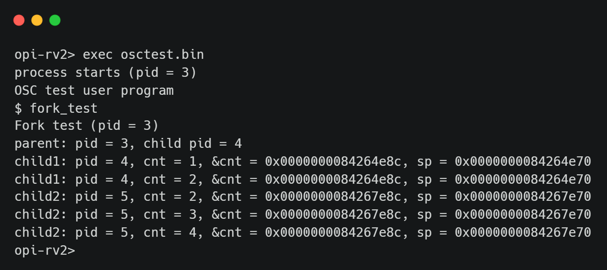
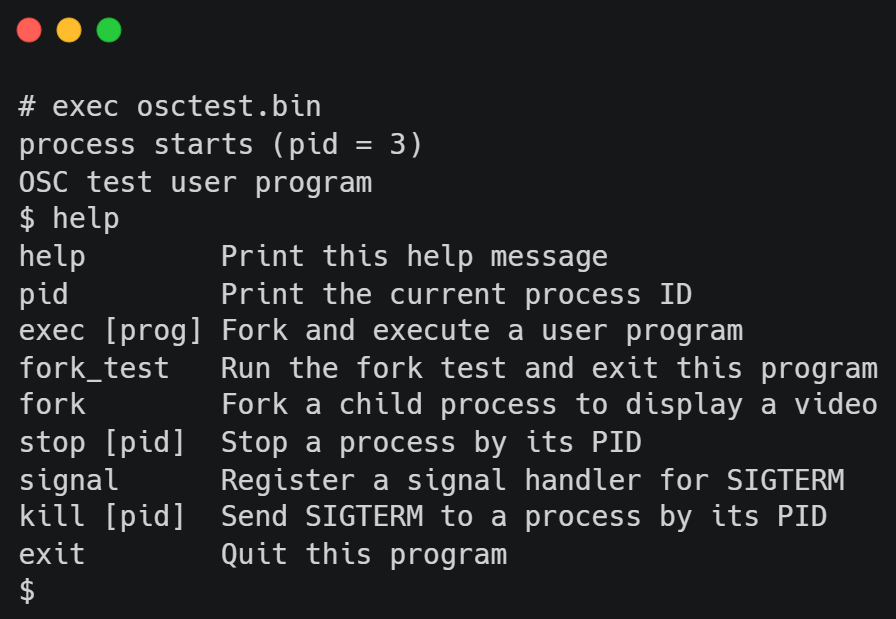

Lab 5: Thread and User Process#
Introduction#
Multitasking is the most important feature of an operating system. In this lab, you’ll learn how to create threads and how to switch between different threads to achieve multitasking. Moreover, you’ll learn how a user program becomes a user process and accesses services provided by the kernel through system calls.
Goals of this lab#
Understand how to create threads and user processes.
Understand how to implement scheduler and context switch.
Understand what’s preemption.
Understand how to implement POSIX signals.
Background#
Threads#
In the previous lab, you already learned how to implement multitasking with a single stack. However, in the case of single stack multitasking, the threads can’t switch between two tasks at any time. Otherwise, a task may corrupt another task’s context stored on the stack.
A better approach is to give each thread its own register set and stack. The scheduler can then save the current thread’s register set, load another thread’s, and resume execution. From the thread’s perspective, it was never interrupted.
User Process#
A user process is a program loaded into memory and executed in U-mode. The kernel manages multiple processes, each with its own execution context and stack. When a process needs kernel services, it invokes system calls. The kernel handles the request and returns the result to the process.
Warning
MMU is not enabled in this lab. Each process has its own user stack, but the global variables remain at fixed physical addresses. Running multiple copies of the same program simultaneously will cause overlap.
Run Queue and Scheduling#
Multiple threads may be runnable at the same time, but a single CPU can only run one thread at a time. Runnable threads are kept in a run queue. When the current thread yields the CPU, the scheduler picks the next thread from the run queue and performs a context switch.
When a thread needs to wait for a resource (e.g., I/O), it should yield the CPU rather than busy-waiting so other threads can make progress. A common approach is to remove the waiting thread from the run queue and only add it back when the resource becomes available.
Yield and Preemption#
A thread can voluntarily yield the CPU to others. However, a thread that never yields will starve other threads from running. Therefore, the kernel should be able to force the current thread to give up the CPU. This is called preemption.
Preemption is typically triggered by an interrupt. When an interrupt occurs, control is passed to the exception handler. Before returning, the kernel can switch to another thread.
Basic Exercises#
Basic Exercise 1 - Thread - 10%#
In this part, you need to implement thread creation, context switching, and thread recycling.
Creating a Thread#
Implement a thread-creating API. A function is passed to the API and runs in the newly created thread. The thread should have its own kernel stack and be added to the run queue.
The example API is shown below:
void foo() { ... }
thread *t = thread_create(foo);
Scheduler and Context Switch#
Implement the schedule() API.
When called, the scheduler picks the next runnable thread from the run queue and performs a context switch using switch_to(prev, next).
Your scheduler should support round-robin scheduling.
The switch_to function saves the current thread’s callee-saved registers into its data structure, then loads the next thread’s registers.
The tp register is updated to point to the next thread’s data structure. You can use it to track the current thread.
.global switch_to
switch_to:
/* Save context */
sd ...
/* Restore context */
ld ...
move tp, a1
ret
Tip
Only callee-saved registers and ra need to be saved here.
ra must be saved explicitly because it holds the return address for the thread to resume from.
All other caller-saved registers are saved by the compiler before calling switch_to,
following the RISC-V calling convention.
The Idle Thread#
The idle thread is always runnable. When there are no other runnable threads, the scheduler picks it to guarantee the CPU always executes the next instruction.
End of a Thread#
When a thread finishes, it should call an exit function to mark itself as terminated. A thread cannot free its own stack while still using it, so the remaining resources must be recycled by someone else.
In this lab, both the idle thread and the parent thread are responsible for recycling zombie threads. You need to ensure that zombie threads are eventually cleaned up and no memory is leaked. The recycling strategy is up to you.
The idle thread should be implemented as follows:
void idle() {
while (1) {
kill_zombies(); // recycle zombie threads
schedule(); // switch to any other runnable thread
}
}
Test#
Please test your implementation with the following code or equivalent logic code.
void foo() {
for (int i = 0; i < 5; i++) {
printk("Thread id: %d %d\n", get_current()->pid, i);
for (int j = 0; j < 100000000; j++);
schedule();
}
thread_exit();
}
void main() {
// ...
// boot setup
// ...
for (int i = 0; i < 3; i++) {
thread_create(foo);
}
idle();
}
Note
Expected result: Multiple threads print the content interleaved.
Todo
Implement the thread mechanism.
Basic Exercise 2 - User Process and System Call - 30%#
In this part, you need to implement the basic user process mechanism such as system calls and user preemption.
Trap Frame#
When a user process takes an exception and enters kernel mode, all registers are saved onto the kernel stack. This saved context is called the trap frame. Before returning to user mode, the registers are restored from the trap frame, so the user process is unaware that it ever entered kernel mode.
For system calls, the user process sets its arguments in registers before executing ecall.
The kernel reads the arguments from the trap frame, performs the requested operation,
and writes the return value back into the trap frame before returning to user mode.
System Calls#
In the previous lab, you used ecall to trap into the kernel.
In this lab, you’ll learn how arguments and return values are passed between user and kernel mode,
and implement the system calls needed to run user programs.
System Call Convention#
When making a system call:
Arguments are passed in
a0,a1,a2, …The system call number is stored in
a7.The return value is written back to
a0.
Required System Calls#
You need to implement the following system calls and their corresponding numbers for user programs.
- 0: long getpid()
Return the current process’s pid.
- 1: long uart_read(char *buf, long count)
Read
countbytes intobuf. Return the number of bytes read.- 2: long uart_write(const char *buf, long count)
Write
countbytes frombuf. Return the number of bytes written.- 3: int exec(const char *path)
Load and execute the program specified by
path. Return 0 on success, -1 on failure.- 4: long fork()
Duplicate the current process. Return the child’s pid to the parent, and 0 to the child.
- 5: long waitpid(long pid)
Wait for the process identified by
pidto finish. Return the pid of the finished process.- 6: void exit(int status)
Terminate the current process. The
statuscan be used to indicate the exit reason, but it is not required in this lab.- 7: int stop(long pid)
Terminate the process identified by
pid. Return 0 on success, -1 on failure.
Important
To execute the test program in Basic Exercise 3, make sure your system calls match the system call numbers.
Kernel Preemption#
Disable interrupts or preemption only when absolutely necessary. Your kernel should remain preemptible at all other times.
Test#
You can pack the User Program used in Basic Exercise 3 into your initrd and execute it.
Type fork_test in the user shell to run the test.
The fork test code in the user program is shown below:
void fork_test() {
printf("Fork test (pid = %d)\n", getpid());
int cnt = 1;
int ret = 0;
if ((ret = fork()) == 0) {
long cur_sp;
asm volatile("mv %0, sp" : "=r"(cur_sp));
printf("child1: pid = %d, cnt = %d, &cnt = %p, sp = %p\n", getpid(), cnt, &cnt, cur_sp);
cnt++;
if ((ret = fork()) != 0) {
asm volatile("mv %0, sp" : "=r"(cur_sp));
printf("child1: pid = %d, cnt = %d, &cnt = %p, sp = %p\n", getpid(), cnt, &cnt, cur_sp);
waitpid(ret);
} else {
while (cnt < 5) {
asm volatile("mv %0, sp" : "=r"(cur_sp));
printf("child2: pid = %d, cnt = %d, &cnt = %p, sp = %p\n", getpid(), cnt, &cnt, cur_sp);
for (int i = 0; i < 1000000000; i++);
cnt++;
}
}
} else {
printf("parent: pid = %d, child pid = %d\n", getpid(), ret);
waitpid(ret);
}
exit(0);
}
The result would be like this:

Note
You don’t need to show the results of Basic Exercise 1 and 2 if you can pass Basic Exercise 3.
Todo
Implement system calls.
Basic Exercise 3 - Video Player - 40%#
In this part, you will run the provided user program to verify your previous implementation. The program requires a working scheduler, system calls, and framebuffer output.
Timer#
Enable the timer interrupt and schedule the pending threads when the timer interrupts. Set the timer to expire every 1/32 second so that the shell and video can run concurrently.
Framebuffer#
A framebuffer is a region of memory that holds pixel data for display output. The display hardware reads from this memory and outputs it to the screen. To display an image, simply write pixel data to the framebuffer address.
QEMU#
For your QEMU command, add -device ramfb to enable the framebuffer,
and remove -display none to create a window for display output.
Before use, the framebuffer base address must be registered with QEMU via the fw_cfg interface.
You can either hardcode an available memory address or dynamically allocate a region.
Note
fw_cfg setup is not the focus of this lab.
You can just use the exercise code
as a reference for the implementation.
Related questions will not be asked during the demo.
Orange Pi RV2#
Connect the HDMI output to a monitor.
The framebuffer is initialized by U-Boot at physical address 0x7f700000, so no additional initialization is needed.
After writing to the framebuffer, the CPU cache must be flushed on Orange Pi RV2 using cbo.flush
to ensure the display hardware reads the latest data from DRAM rather than stale cache.
If your toolchain supports -march=rv64gc_zicbom, you can use the instruction directly.
Otherwise, use the raw instruction encoding instead:
#define cbo_flush(start) \
({ \
asm volatile("mv a0, %0\n\t" \
".word 0x0025200F" \
: \
: "r"(start) \
: "memory", "a0"); \
})
Required System Calls#
- 8: void display(unsigned int *bmp_image, unsigned int width, unsigned int height)
Display the video.
- 9: int usleep(unsigned int usec)
Sleep for a specified number of microseconds. Return 0 on success, -1 on failure.
User Program#
Load this user program to your kernel and execute it. The system call you defined above would be used by the user program.
Important
The user program must run in U-mode.
A snapshot of the user program:

Important
You will receive 0 point in this part if any of the following happens during the demo:
The shell and the video cannot run simultaneously.
The video is not displayed normally. e.g., artifacts due to cache, distorted, wrong color, etc.
Your program crashes or gets stuck.
Todo
Implement the video player.
Advanced Exercise#
Advanced Exercise - POSIX Signal - 30%#
POSIX signal is an asynchronous method of inter-process communication. When a process receives a signal, it executes a default or registered signal handler.
Implementation#
The kernel checks for pending signals before returning a process to user mode. If a signal is pending, the kernel redirects execution to the appropriate handler.
Default signal handlers can be handled entirely in kernel mode. User-registered handlers, however, must run in user mode. Before jumping to the handler, the kernel saves the original user context so it can be restored after the handler completes.
The handler needs its own user stack to avoid corrupting the original stack. The kernel allocates a new stack for the handler and recycles it after completion.
When the handler returns, the process is still in user mode.
To notify the kernel that the handler has finished,
the kernel sets ra to a trampoline that calls the sigreturn() system call.
The kernel then restores the saved context and resumes the original execution.
Note
Nested signal handlers do not need to be handled.
Required System Calls#
- 10: long signal(int signum, void (*handler)())
Register a user-space handler for the given signal. The handler must run in U-mode. The return value is the previous handler for the signal, you can ignore it in this lab.
- 11: void sigreturn()
Restore the original user context after a signal handler returns. This syscall is called automatically via a trampoline set by the kernel. The kernel also recycles the signal stack upon completion.
- 12: int kill(int pid, int signum)
Send a signal to the process identified by
pid. If the process has a registered handler for the signal, the handler is executed. Otherwise, the process is terminated by default. Return 0 on success, -1 on failure.
Important
You must print a message in the sigreturn function to verify your implementation is correct.
The message should be printed every time a signal handler finishes.
To test with the provided user program:
Type
signalin the shell to register a signal handler.Type
forkto create a child process.Use
kill [pid]to send SIGTERM to the child process.
p.s. SIGTERM = 15
The child process should execute the registered handler instead of being terminated.
Note that only processes forked after signal is called will inherit the handler.
Todo
Implement POSIX signal.